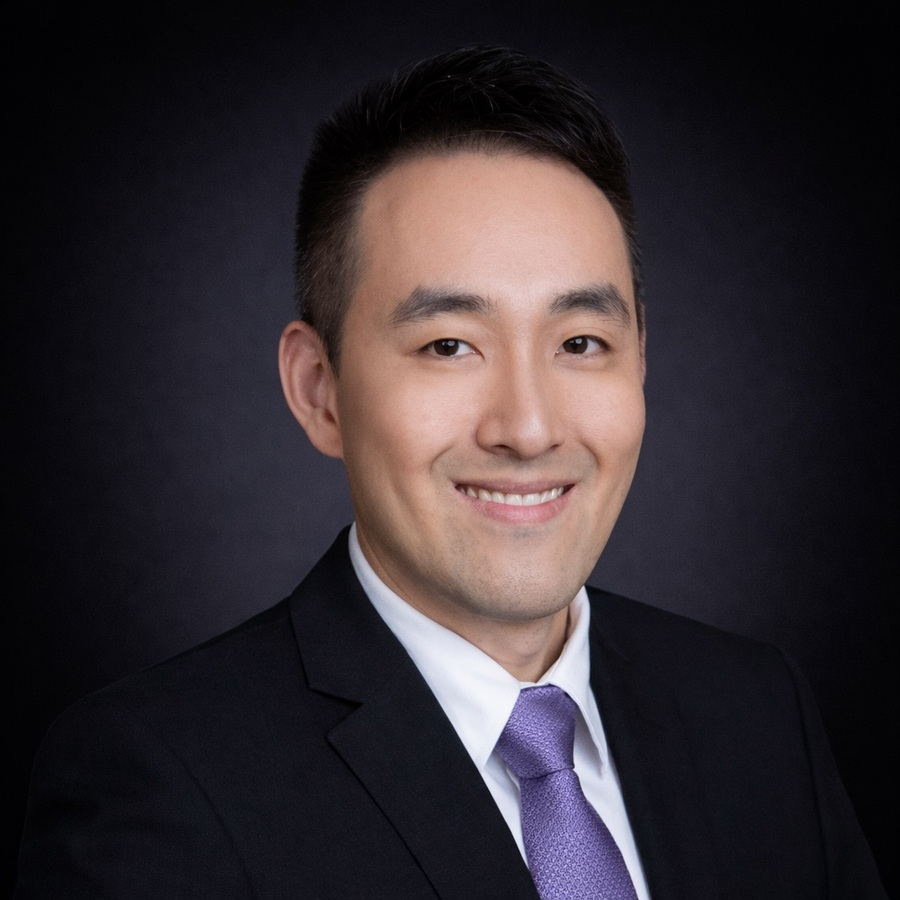
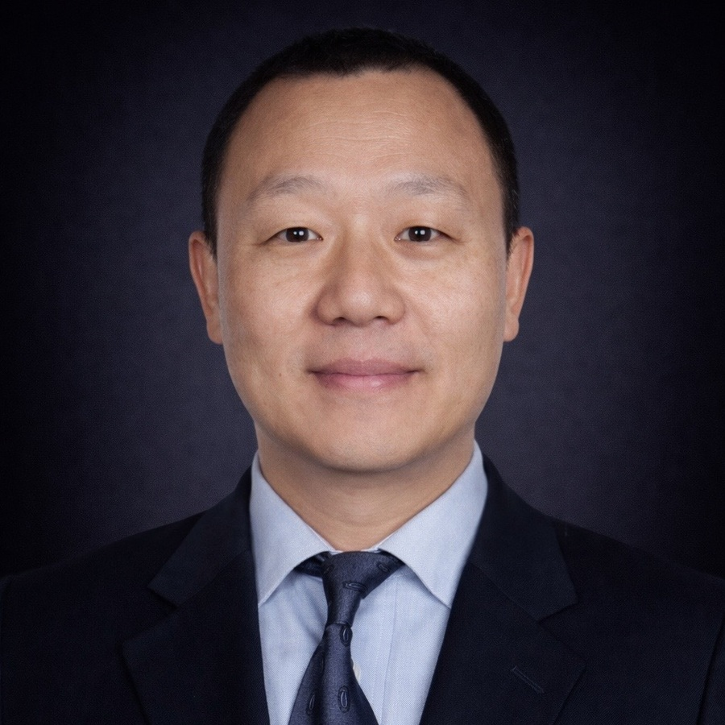

Benjamin Fanger
Managing Partner & Founder
Leads platform strategy and underwriting discipline. More than two decades in Asia private credit and special situations.
In a market where outcomes are determined by local relationships, legal precision, and the ability to enforce, the quality of the team is the strategy. ShoreVest’s professionals span investment underwriting, legal structuring, creditor negotiation, asset resolution, and investor coverage — built over two decades of operating through every phase of China’s credit cycle.
The leadership and investment team drives portfolio construction, underwriting discipline, and investment decision-making across ShoreVest’s core private credit strategy.
Leads platform strategy and underwriting discipline. More than two decades in Asia private credit and special situations.
Oversees firm finance, controls, and operational governance across onshore and offshore entities.

Focuses on structuring and execution in complex private credit transactions, including stressed and dislocated opportunities.
Brings legal and risk expertise to underwriting, collateral protection, and restructuring pathways.
Leads portfolio monitoring and value-protection efforts through workout and recovery processes.
Provides policy, regulatory, and market context to support underwriting judgment, risk calibration, and strategic perspective.
Provides strategic and regulatory advisory drawing on extensive experience in China's financial sector and institutional networks.
Contributes policy and macroeconomic perspective to ShoreVest's investment thesis, with a focus on China's regulatory environment and credit cycle dynamics.
Author and expert on China's financial system, debt markets, and shadow banking sector. Provides analytical and market context to ShoreVest's research and investor communications.
Brings structured finance and credit market expertise to ShoreVest's advisory function, with a focus on deal structuring and counterparty relationships.
Supports ShoreVest’s capital solutions capabilities across structuring, execution, and platform coordination.
Leads capital structure advisory and deal origination, working with borrowers and institutional counterparties across ShoreVest's investment pipeline.
Covers investor relationships, fundraising dialogue, and client coverage across ShoreVest's private credit platform.
Leads investor relations coverage for ShoreVest's LP base outside Asia, supporting fundraising and ongoing investor communications for Fund III.

Leads investor relations coverage across Asia, managing relationships with institutional LPs in the region and supporting capital formation for ShoreVest's funds.
Oversees legal structuring, compliance management, and control frameworks that uphold institutional governance standards.
Oversees legal structuring, regulatory compliance, and governance frameworks across ShoreVest's investment platform and fund vehicles.
Manages compliance operations, regulatory filings, and internal control processes across ShoreVest's China-based entities.
Supports ShoreVest’s investment platform through on-the-ground origination, servicing and execution capabilities across key regions in China.
Leads ShoreVest's Hong Kong-based origination and asset management activities, supporting deal sourcing and resolution execution.
Oversees origination, servicing, and recovery execution across ShoreVest's Guangzhou operations, with direct responsibility for on-the-ground portfolio management.

Supports origination and portfolio servicing across ShoreVest's Shanghai coverage, with a focus on regional deal flow and borrower management.